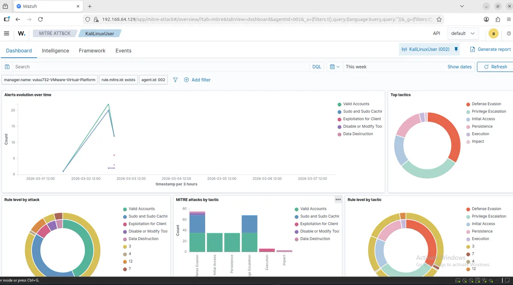
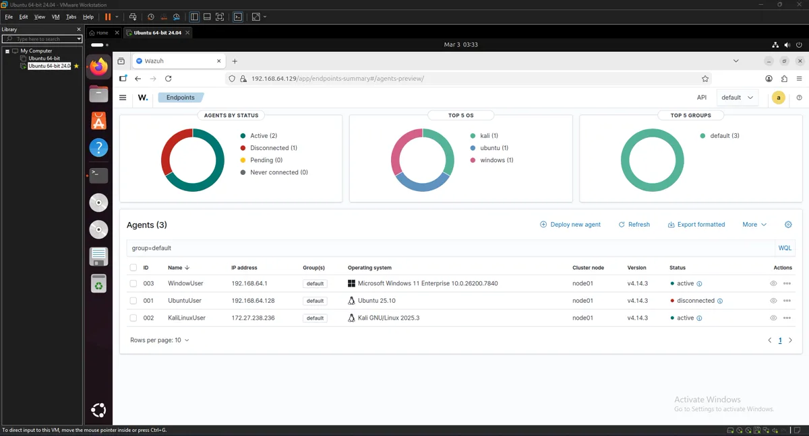
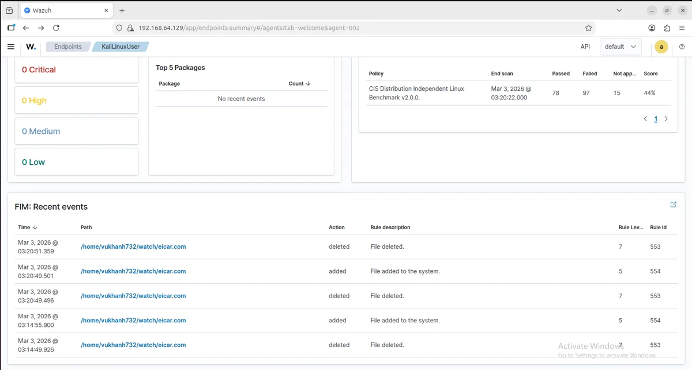

Wazuh SOC HomeLab
Make endpoint events useful to an investigator. Windows, Ubuntu and Kali telemetry in one Wazuh lab, with file-integrity events, MITRE views and an offline alert triage tool.

Why it exists
I built a VMware lab to practice endpoint onboarding, event investigation and the hand-off toward response. A Wazuh manager collects telemetry from Windows, Ubuntu and Kali endpoints.
Existing lab evidence
The captured inventory, MITRE ATT&CK views and file-integrity events show the lab’s endpoint visibility. EICAR file creation and deletion are controlled test events, not evidence of a real compromise.
New offline triage utility
A standard-library Python CLI reads exported JSONL alerts and generates Markdown tables by severity, endpoint, MITRE technique and rule. Exact agent and minimum-level filters narrow an investigation. Malformed data reports the input line and stops before writing the report; untrusted text is escaped.
Verification and limits
Three regression tests cover counting/filtering, invalid alert shapes and safe report text. Example exports are synthetic and labelled separately. Endpoint names are grouped together, and counts represent alerts rather than distinct incidents. The repository documents VirusTotal/Active Response configuration but does not include its custom quarantine script or a reproducible deployed response implementation.
More lab evidence

